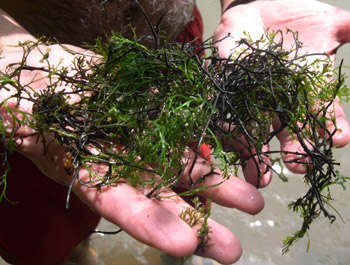

Previous || Next || Return to Mystery Plants || USC Herbarium
This Week's Mystery Plant | Dr. John B. Nelson Curator, USC Herbarium |
|
If humility is a virtue, then this plant could be the most "virtuous" plant around. It is widespread in the eastern USA, but not many people know of it, since it grows below water, most often attached to rocks. When people do see it, they often think it is some sort of algal growth, or perhaps an aquatic moss. But it's a true flowering plant: it produces plenty of flowers, but they are very, very tiny, and they lack petals. The plants themselves tend to be hard and crunchy, with leaves that feel like stiff plastic. These leaves, which may be bright green to nearly black, tend to be forked, often divided into numerous divisions. Under normal conditions, the plants are always below water. In whitewater streams, rapidly flowing rivers, or around waterfalls, the plants tend to be compact and somewhat crusty. In quieter creeks, the plants are able to elongate, having a somewhat stringy look. Living in swift currents means that you have to remain attached to something; our Mystery Plant produces tiny, round disks which provide tight attachment even in the fastest water. You might think that such a plant doesn't deserve much respect. On the contrary: it surely deserves our admiration for being able to grow and thrive in its specialized aquatic habitat. There is growing evidence that this plant is a good indicator of clean rivers. Additionally, the plants apparently filter sediments from the water column, and they provide habitat for tiny invertebrates. If you are in the Columbia area and would like to experience the virtues of this plant, feel around on the rocks in the cold, cold water of the Congaree River just below the Gervais Street bridge. There's plenty of it. |
 Photo by Carlos Annrich |